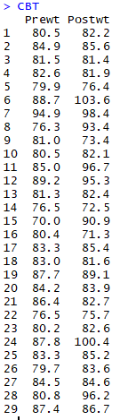

: Wilcoxon Signed-Rank Test는 자료의 순서를 사용하여 자료의 중위수(median)가 0인지 검정.
=> 양수인 데이터의 수와 음수인 데이터의 수가 같다면 중위수가 0이다.
Prewt : CBT라는 약 복용 전 체중 , Postwt는 복용 후 체중
 => p-value가 0.007945로 정규분포를 따른다는 귀무가설을 기각한다.
=> p-value가 0.007945로 정규분포를 따른다는 귀무가설을 기각한다.
1 . 귀무가설 : CBT 복용 전후 몸무게 차이가 정규분포를 따른다.
2 . 대립가설 : CBT 복용 전후 몸무게 차이가 정규분포를 따르지 않는다.
3 . 검정통계량 : W = 0.8962
4 . p-value = 0.007945 < 0.05
5 . 결정 : CBT 복용 전후 몸무게 차이가 정규분포를 따르지 않는다. => 즉 비모수 방법을 이용해야 한다.
 p-value = 0.06447로 유의하지 않은 결과가 나왔다.
p-value = 0.06447로 유의하지 않은 결과가 나왔다.1 . 귀무가설 : CBT 복용 전후 몸무게 차이의 median은 0이다.
2 . 대립가설 : CBT 복용 전후 몸무게 차이의 median은 0이 아니다.
3 . 검정통계량 : V = 303.5
4 . p-value = 0.06447 > 0.05
5 . 결정 : CBT 복용 전후 몸무게 차이가 없다.